It is an initiative taken by KOSS,IITKgp for students who are new to open source development,
to get them involved during their winter vacations and break the ice of Open Source contributions.
All of the work is done in Github.
Students can choose any project and work on it after talking to the respective project mentor. I choose AirHockey
because I wanted to learn python (I knew the basics) and also because it was a game which got me
excited enough to work on this project. I mailed my mentor and he guided me after that.
It is a game built in Python using the PyGame library. The game was in its initial stage of development with just
one screen where the gameplay started directly, but after KWoC it became very feature enriched with options to add name,
choose paddle color and background color , background music was added and also easy and hard options for newcomers and
advanced players respectively were added and a lot more.
Initially, the game resolution was 800 by 600 but my suggestion was that it should be playable in full-screen
mode but at last, it was not done because most of the code was hardcoded which will lead to writing the entire
code form beginning. Instead, the resolution was changed to 1200 by 600.
So this issue addressed the problem that there was no option to mute the music in the game which
can be sometimes annoying for the players.
So when a game ends the player name who wins used to flash so I thought of doing the same in the
start screen for "AirHockey".
Some code in the file "themeScreen.py" was repeated which could have been replaced with a
loop. So this issue addressed that problem.
A white box is displayed around the color that is selected which appeared for only one player
so this issue addressed that problem.
This issue addressed the problem that after the background track has completed playing it doesn't
replay itself.
It addresses the problem when a round is completed it the next round starts directly.
There was a bug in the game when the sound in the game is muted the "hit" and "goal" sound still played.
When the option to add name was introduced in the game there was a bug, so when the next player name
is clicked directly after entering the first player name both of the name boxes becomes white, ideally
the box in which name is being entered should be white.
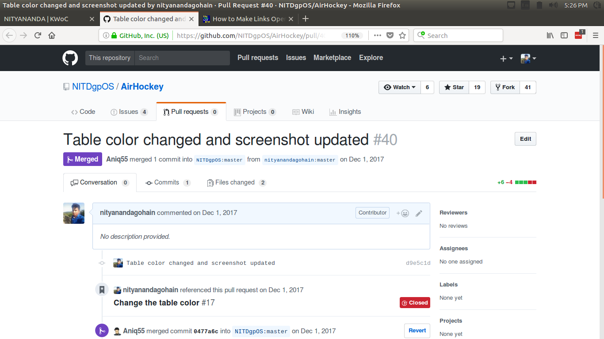
This was my first PR I just updated the color of the table and updated the "Readme.md" with a newly taken screenshot.
I also got a bit familiar with the code base. By this time I started to read the PyGame documentation.
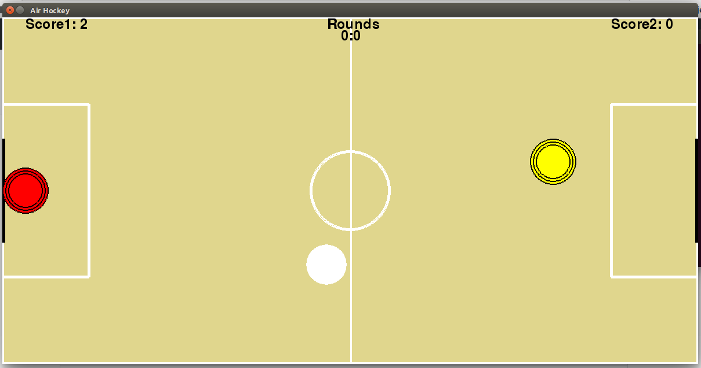
Initially, the paddle's were rectangular in shape and size of the puck was small.
In this PR, I changed the paddle to a concentric circle to make it more natural and also increased the puck
size.
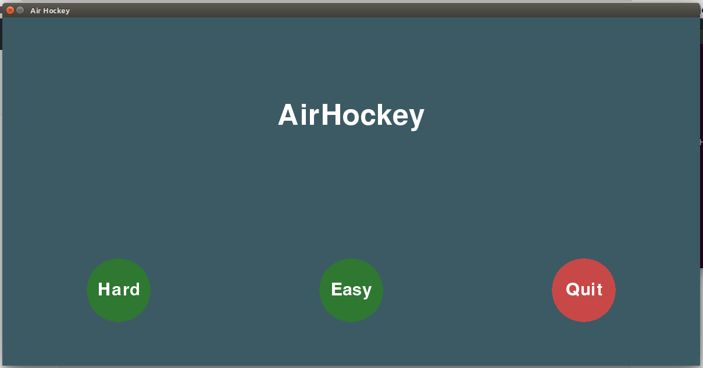
We had to create a start-screen because the game play starts directly after launching the game. So I worked on this issue
and it was a challenging one and till then i haven't done something that advance. So it was quite an experience .
I created a new file named as "startScreen.py" and I had implemented a screen which will show up first
when the game is launched.
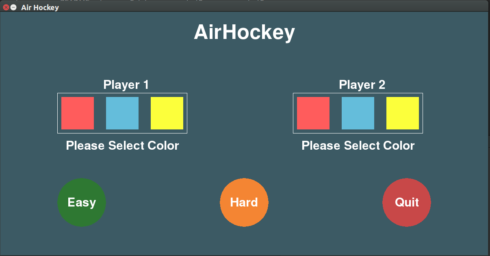
While playing the game there used to be a default color of the paddle which cannot be changed. So I added option to
choose paddle colors for both the players in the start screen which looked quite empty previously.
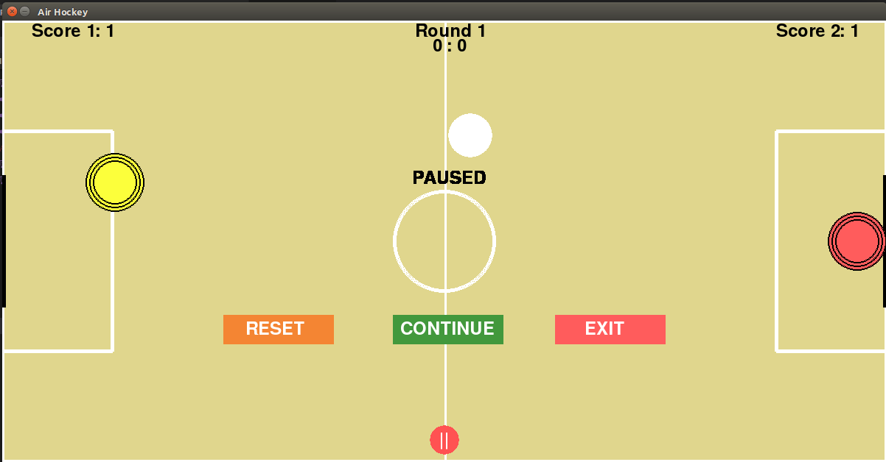
The game can be paused in the middle but it lacked some features like reset, exit so in this PR I implemented
buttons in the pause-screen to reset, continue and exit. I also colored all the three of them.
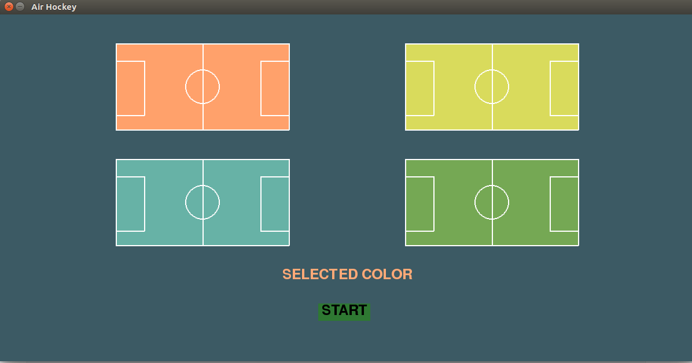
The game had the option to choose paddle color but there was no option to choose the table background(theme).
I created a new file named "themeScreen.py" and added four options so that one of the users can select the theme.
It appears right after the start screen.
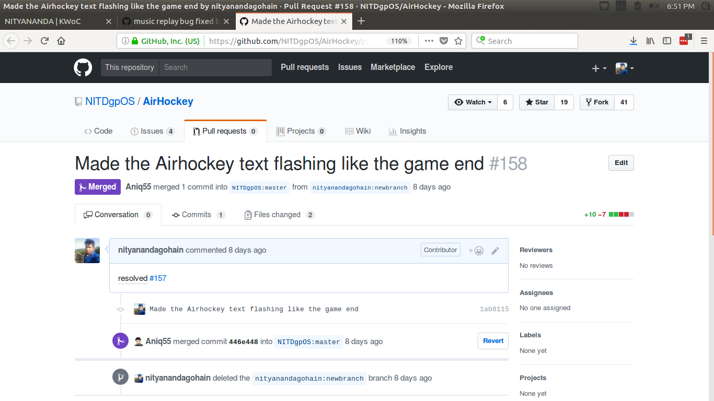
So by this time
@thealphadollar had implemented an end screen
where the winner name was flashing. So in this PR I implemented the same concept to the AirHockey logo in the
start-screen and made it flash.
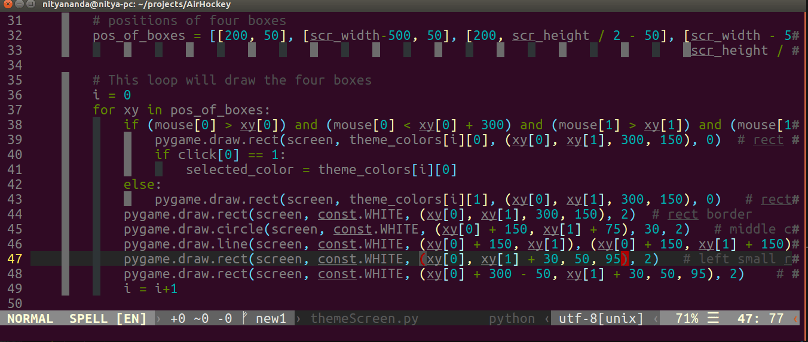
In "themeScreen.py" previously I wrote separate code for all the four options of background. So I reduced it
by storing the required (x/y) values in an array and used a for loop to iterate over it. Now the code was much
neat than the previous one.
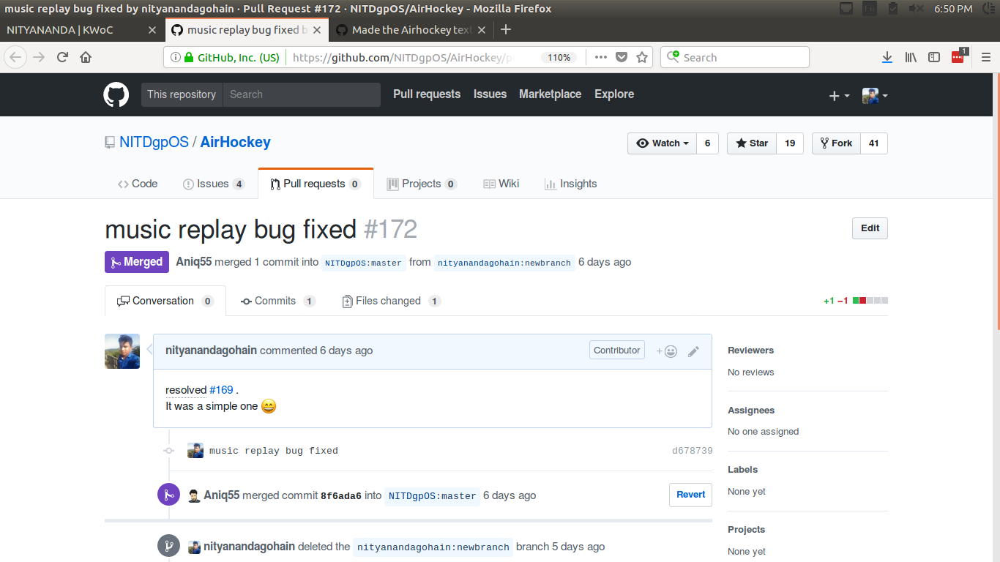
In the game, we had a background music so while playing the game if the music finishes the music didn't
replay in a loop so this PR fixed that issue and now the background music play's in a loop.
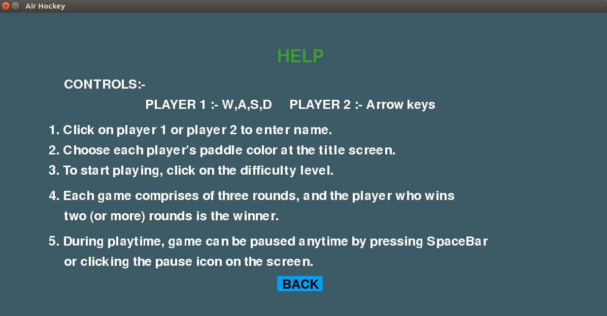
Our game was lacking an in-game help which can be used by new players. So I created an in-game help which can be
accessed from the start screen by clicking on the info button.
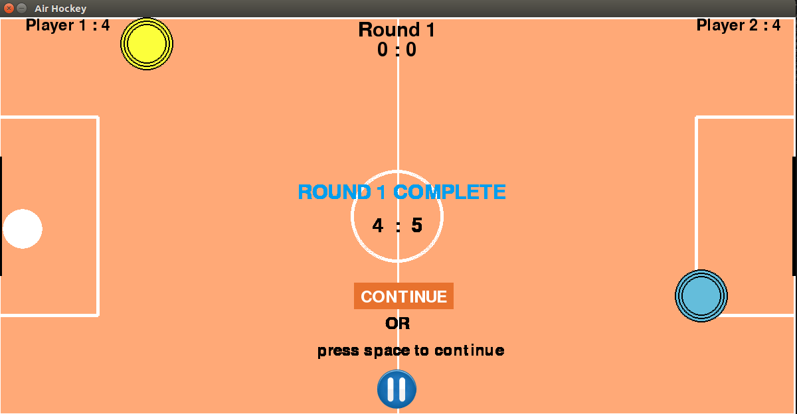
While playing the game when a round is completed it wasn't notified to the player it was changed directly so this
PR solved that issue and whenever a round is changed it is notified to the players.
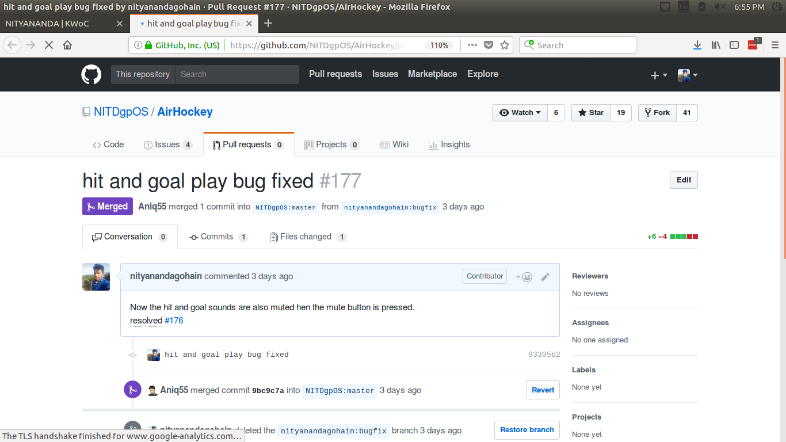
The game had an option to mute the music but after pressing mute the background music stop's playing but in the
game the sound of hitting the puck and scoring a goal was still playing so this PR fixed that bug in the game.
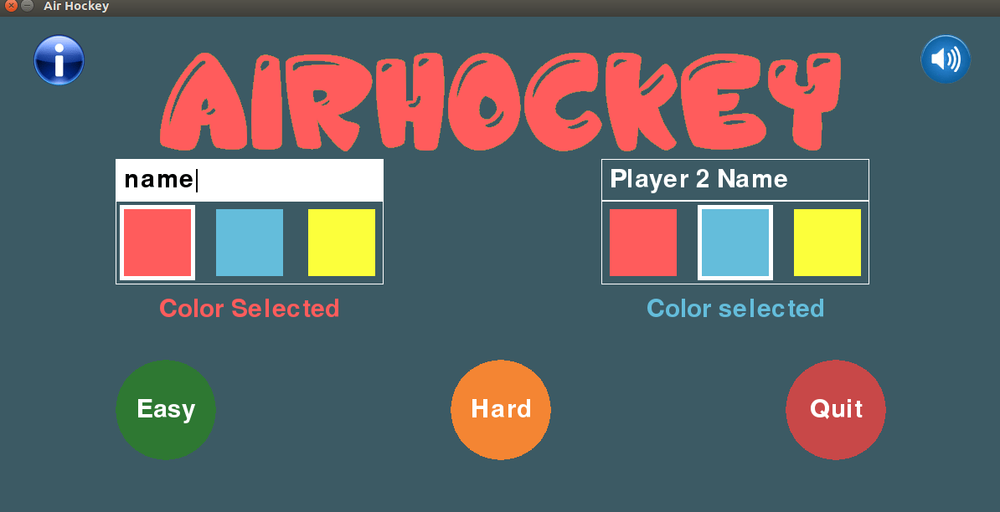
This was the most interesting issue I have solved. So there was no option to add player name to the game
so when I searched for some GUI input taking method in the PyGame library I couldn't find any. But with some
help from
@thealphadollar and my Mentor i was able to do it
and it was quite fun.
So overall KWoC'17 was a great experience I learned a lot and got to know people with similar interest. I was a beginner
in python and I didn't know how to use the PyGame library but after this program, my python skills have improved drastically
and I also learned to use the PyGame library, all of this in a very short span of time. Previously I had the fear of putting
up pull requests or I used to get scared by the huge code base. I used to think how could I contribute because I couldn't
understand anything about how that much code works together. But after this event all that was gone. I started to love programming more.
Finally,
I thank my mentor @Aniq55 who was very supportive through the entire event.
And the KWoC team, you all are great, thank you for organizing such a great event.
{kind=link}
{kind=link}
{kind=link}
{kind=link}
{kind=link}
{kind=link}
{kind=link}
{kind=link}
{kind=link}
{kind=link}
{kind=link}
{kind=link}
{kind=link}